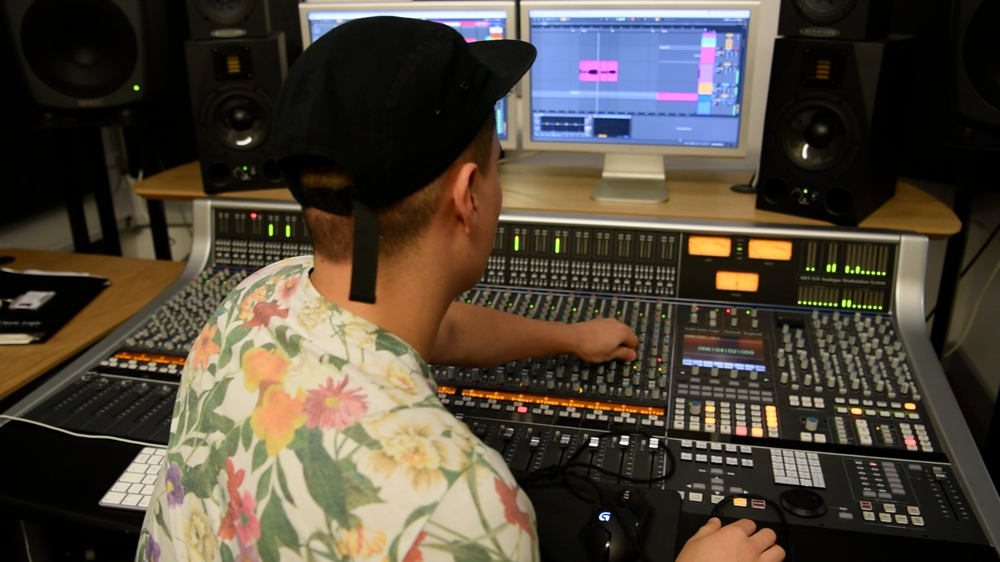

LA VILLLA Disco
Disco, funk et house jusqu'à la fermeture. La première édition, en 2025, recevait Antho Decks (FR), Roman Martinez (NYC) et Sam Chef.
Afro, latin, disco et tech house. Un label, des soirées, un studio et une recherche en son spatial, à Montréal.
Latin Lime Lovers
Le collectif et l'imprint de Villagomez Records. Des DJ, des musiciens et des chanteurs réunis autour de la diversité, de l'inclusion et des voyages sonores. Quatre formats de soirées, un invité chaque fois : la vie live.

Disco, funk et house jusqu'à la fermeture. La première édition, en 2025, recevait Antho Decks (FR), Roman Martinez (NYC) et Sam Chef.

Des sets 100 % vinyle, plus lents et plus intimes. Pour écouter autant que pour danser.

DJ et musiciens live sur un toit de Montréal, du coucher du soleil jusqu'à la nuit.

Le gros party. L'événement phare de l'année, avec musiciens live, percussions et invités.
Les dates de l'automne s'en viennent. Suis @la.villla pour les annonces et la liste d'invités.


Du casque au dancefloor
Depuis une dizaine d'années, Villagomez enregistre le monde autour de lui : vagues du Pacifique, feux d'artifice à Lima, trains anglais, percussions, voix, foules de club. Sa recherche consiste à faire voyager cette matière du casque jusqu'au dancefloor spatialisé, où le public ne fait plus seulement face au son : il est dedans.


Chaque pièce est un voyage, avec un début, une tension et une arrivée. Un set se construit comme un récit : de la méditation à la danse, puis le retour au calme.
Micros ambisoniques et ultrasoniques multicanaux, prises de terrain et centaines de couches : une banque d'environ dix ans d'enregistrements, pensée pour l'espace dès la prise de son. Son environnement devient matière : de la prise de son créative sur des matériaux de construction, dans le garage de son père, jusqu'à une banque de sons de club au Soubois, avec des ambiances de cocktail de 5 à 7 captées sans musique.
Basses modulaires et instruments joués pour vrai, percussions afro-latines et haïtiennes captées en multi-micros. Aucune IA générative : chaque son est enregistré ou fabriqué à la main.
Une recherche pensée pour servir le milieu professionnel : la création passe par plusieurs logiciels, et le mix final se fait en synchro dans Pro Tools. Une même œuvre doit pouvoir se décliner du dôme à la quadriphonie, au binaural et à la stéréo.
Le son spatial, c'est l'avenir du dancefloor. Je veux donner une nouvelle voix aux musiques traditionnelles, pas seulement à l'électronique, dans une musique métissée à l'image de Montréal.
Villagomez
Conçue en octophonie à l'University of Huddersfield, finalisée en binaural. Mer de Paracas, feux d'artifice à Lima, métro de Londres, trains et vols de retour, portés par un violoncelle : le récit d'un départ précipité du Royaume-Uni en mars 2020. Sélectionnée par Jeu de temps / Times Play 2021 de la Communauté électroacoustique canadienne.
Écouter sur jttp.ca au casque
Composée pendant l'échange en Sonic Arts & Composition, l'année où le projet musical de Villagomez est né.
Afro-latin, disco et house, entre enregistrement vintage et moderne. Environ cinquante chansons enregistrées avec des musiciens d'ici et d'ailleurs, toutes jouées pour vrai.
Première sortie
Villagomez feat. AURÈLIA · Rawsome Records
Sa toute première sortie, et son premier single disco house joué live. La voix est celle d'AURÈLIA, la chanteuse chypriote Nicoleta Assioti, rencontrée pendant son échange à Huddersfield. Les batteries acoustiques ont été captées au Royaume-Uni.
Voir le vidéoclip sur YouTube
Musiciens, chanteurs, compositeurs : le son de Villagomez Records se construit à plusieurs, en studio et sur scène, avec des artistes d'ici et d'ailleurs.


Enregistrement, mixage, mastering et sound design pour les artistes, les agences et les marques. Au Studio Villagomez, au Mile End : consoles Neve, SSL et Electrodyne, micros Neumann et Sanken, et un mur de synthés vintage et modernes.
Percussions, voix et instruments enregistrés live en haute résolution, puis mixés dans Pro Tools ou Ableton Live.
Des masters prêts pour le club, le streaming et le vinyle, qui gardent l'énergie de ton mix.
Musique originale pour marques et agences : publicité, contenu social, sync. De la direction artistique jusqu'au mix final.
Textures, ambiances et effets pour le jeu vidéo, la série, le film et l'installation, nourris de dix ans d'enregistrements de terrain.


Sessions Percussions, voix et instruments enregistrés live


Studio Villagomez Le mix et le mastering


DJ, producteur, sound designer et ingénieur de mastering montréalais. Samuel Villagomez se voit d'abord comme un interprète : pour lui, chaque geste est un geste musical.
Tout part d'une grand-mère chanteuse d'opéra et professeure de piano. Violon dès quatre ans, puis violoncelle en orchestre symphonique pendant toute sa jeunesse. Il commence à mixer à quatorze ans et produit depuis une quinzaine d'années.
DEC en électronique audiovisuelle et baccalauréat en musiques numériques à l'Université de Montréal. Il y cherche à apprendre la performance live sur un tempo fixe, celui du dancefloor, ou à jouer du violoncelle de façon expérimentale. En deuxième année, il monte un projet de plaques de métal jouées en direct et mises en boucle pour en faire de la techno industrielle. Encore trop conventionnel, selon ses professeurs.
En 2014-2015, un stage de trois mois à Radio-Canada en post-production sonore et en enregistrement et mixage de musique, aux côtés de chacun des techniciens audio, jusqu'à une journée sur le Bye Bye. Dès sa toute première journée, assis à la console SSL aux côtés de l'ingénieur du son Guy Charbonneau, il observe l'enregistrement d'un piano avec 157 micros, avec le pianiste Roman Zavada et son frère Ivan Zavada, pour le projet Résonances Boréales, présenté dans le dôme de la SAT. Les deux frères l'attendaient : leur mère, grande amie de sa grand-mère, les avait prévenus. C'est là qu'il découvre la résonance par sympathie, ces cordes qui se mettent à vibrer sans être frappées, en réponse à celles qu'on joue, et qu'il entend pour la première fois le mot « électroacoustique ».
Vient ensuite un échange en Sonic Arts & Composition à l'University of Huddersfield, au Royaume-Uni, dont un travail de mixage dans un studio quasi anéchoïque. C'est là qu'il trouve sa voix et que naît son projet musical. En 2020, il termine ses études par un stage chez La Hacienda Creative, où il joue du violoncelle sur des trames sonores et retrouve ses plaques de métal. Il a aussi suivi trois formations TouchDesigner à la SAT.
Sur le terrain : direction technique, éclairage et lasers au Soubois et à La Voûte, avec une formation sur console d'éclairage grandMA, des soirées de 800 personnes, et plus d'une cinquantaine d'événements organisés depuis ses 18 ans, après des open house et des free raves montés dès l'adolescence avec ses amis. Comme DJ, des résidences au Soubois, à La Voûte, au Club Pelicano, au Balcon, au Motel Motel et à la Terrasse Belvu, des premières parties pour Claptone, Black Coffee, Guy Gerber et DJ Ruckus, et des scènes de l'Hôtel W et du Secret Garden by Veuve Clicquot jusqu'au Cirque du Soleil, en Angleterre et à Saint-Pierre-et-Miquelon.


Des sets filmés, archives et nouveautés mélangées. Un nouvel épisode chaque vendredi sur YouTube, SoundCloud et Mixcloud.


Une soirée, un master, une musique pour ta marque, une collaboration en son spatial ou une démo pour le label : écris-nous.